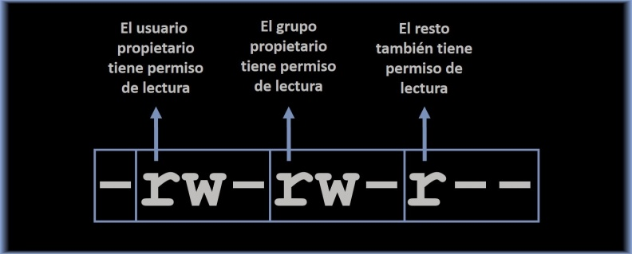
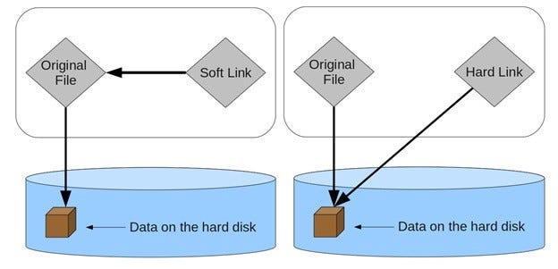

UD00 1. Terminal
1. Introducción
La línea de comandos de Linux, también conocida como terminal o shell, es una herramienta esencial en el mundo de la informática y la administración de sistemas. Ofrece un entorno de texto en el que los usuarios pueden interactuar con el sistema operativo mediante comandos escritos en lugar de utilizar una interfaz gráfica de usuario.
¿Por qué aprender la línea de comandos de Linux?
- Control Total: La línea de comandos proporciona un control preciso sobre el sistema, permitiéndote realizar tareas específicas con gran flexibilidad.
- Automatización: Automatizar tareas repetitivas mediante scripts, lo que ahorra tiempo y reduce errores.
- Administración del Sistema: Gestionar servidores y recursos de manera eficiente.
- Recuperación y Resolución de Problemas: En situaciones de recuperación de datos o resolución de problemas, la línea de comandos es una herramienta valiosa.
Conceptos Básicos:
- Comandos: Son instrucciones específicas que se ingresan en la línea de comandos para realizar tareas, como crear archivos, mover carpetas o mostrar información del sistema.
- Argumentos: Son datos adicionales necesarios para que el comando funcione correctamente.
- Directorio Actual: Especifica el contexto de trabajo actual.
- Rutas: Se utilizan para especificar la ubicación de archivos y directorios en el sistema.
Primeros Pasos:
- Abrir la Terminal: En la mayoría de las distribuciones de Linux, puedes abrir la terminal desde el menú de aplicaciones o utilizando combinaciones de teclas como "Ctrl + Alt + T".
- Uso de comandos: Utiliza comandos como
ls(listar),echo(imprimir por pantalla) ypwd(imprimir directorio de trabajo) para explorar el sistema de archivos. - Ayuda y Manuales:
man lsmuestra el manual para el comandols.
Tipos de shell:
Bash (Bourne Again Shell): Es el shell más común en Linux y es ampliamente utilizado. Ofrece una amplia gama de características, incluyendo autocompletado de comandos, historial de comandos, y scripts para automatizar tareas.
Zsh (Z Shell): Es una extensión de Bash con características adicionales, como sugerencias interactivas y personalización avanzada. Se ha vuelto popular entre los usuarios avanzados.
Fish es conocido por su facilidad de uso y su sintaxis más intuitiva. Ofrece sugerencias de comandos en tiempo real y es ideal para principiantes.
1.1. Archivos, carpetas y enlaces
1. Archivos:
- Los archivos son unidades básicas de almacenamiento que contienen datos, programas o información.
- Pueden ser de diferentes tipos, como archivos de texto, binarios, de configuración, etc.
- Los archivos se identifican por su nombre y extensión (opcional).
- Algunos comandos:
cat,touch,cp,mv,rm,headytail. - Se pueden crear archivos o directorios “ocultos” si su nombre empieza por punto (.), ejemplo: .config
2. Carpetas (Directorios):
- Las carpetas, también llamadas directorios, son contenedores utilizados para organizar y agrupar archivos y otras carpetas.
- Se utilizan para crear una estructura jerárquica en el sistema de archivos.
- Se utilizan comandos como:
mkdir,rmdir,cdypwd.
3. Carpetas ESPECIALES:
Todas las carpetas Linux tienen 2 carpetas “especiales” en su interior.
- Carpeta punto (.) - Hace referencia a la carpeta actual (a ella misma)
- Carpeta punto punto (..) - Hace referencia a la carpeta superior (carpeta “padre”).
4. Enlaces:
- Los enlaces son referencias o punteros a archivos o directorios existentes en el sistema de archivos.
- Hay dos tipos principales de enlaces en sistemas Linux: enlaces duros (hard links) y enlaces simbólicos (symbolic links o symlinks).
- Los enlaces duros apuntan al mismo contenido físico que el archivo original y no pueden cruzar sistemas de archivos.
- Los enlaces simbólicos son más flexibles y pueden apuntar a archivos o directorios en cualquier ubicación, incluso a través de sistemas de archivos diferentes.
- Los enlaces permiten compartir recursos de manera eficiente y mantener la integridad de los datos.
1.1. Permisos
En Linux, cada fichero y carpeta tiene tres niveles de permisos: propietario, grupo y otros.
El propietario es el usuario que creó el archivo o carpeta, el grupo es un conjunto de usuarios relacionados y "otros" incluye a todos los demás usuarios.
Tipos:
Lectura (r): Permite ver el contenido del archivo o listar el contenido de una carpeta.
Escritura (w): Permite modificar o eliminar el archivo o carpeta.
Ejecución (x): Permite ejecutar un archivo o acceder a una carpeta.
Representación:
Los permisos se representan con una cadena de nueve caracteres: rwxrwxrwx.
Los primeros tres caracteres representan los permisos del propietario, los siguientes tres del grupo y los últimos tres para otros.



Permisos especiales
- Algunos archivos y carpetas tienen permisos especiales, como el bit SUID (Set User ID), que permite a un usuario ejecutar el archivo con los privilegios del propietario.
- El bit SGID (Set Group ID) hace que los archivos se ejecuten con los privilegios del grupo.
- El bit sticky (t) evita que otros usuarios eliminen o modifiquen archivos en una carpeta, a menos que sean propietarios o tengan permisos especiales.
1.2. Carpetas del sistema

Estas carpetas son fundamentales para la organización y el funcionamiento del sistema. Dependiendo del Linux instalado algunas podrían no existir.
- /root:
- Es el directorio de inicio del superusuario (root) y contiene los archivos de configuración y datos del superusuario.
- /home:
- Contiene directorios personales de los usuarios regulares. Cada usuario tiene su propia carpeta con su nombre de usuario, donde pueden almacenar sus archivos y configuraciones personales.
- /etc:
- Archivos de configuración del sistema y de aplicaciones. Aquí se encuentran configuraciones importantes como /etc/passwd (información de usuarios), /etc/fstab (tablas de montaje de dispositivos), y muchos otros.
- /bin y /sbin:
- /bin almacena binarios (ejecutables) esenciales para el sistema, que son necesarios incluso en el modo de usuario único.
- /sbin contiene binarios similares, pero están destinados a ser utilizados por el superusuario (root).
- /usr:
- /usr (abreviatura de "Unix System Resources") contiene programas, bibliotecas y archivos de datos que son utilizados por aplicaciones y usuarios.
- /usr/bin y /usr/sbin contienen binarios de programas instalados, mientras que /usr/lib contiene bibliotecas compartidas.
- /var:
- /var almacena datos variables, como archivos de registro (logs), correos electrónicos y otros datos que cambian con el tiempo. Por ejemplo, /var/log contiene archivos de registro del sistema.
- /tmp:
- /tmp es un directorio temporal donde los programas y usuarios pueden crear archivos temporales. Los archivos aquí se eliminan automáticamente después de un tiempo o al reiniciar el sistema.
- /dev:
- /dev contiene archivos especiales que representan dispositivos en el sistema. Estos archivos se utilizan para interactuar con hardware y controladores de dispositivos.
- /proc:
- /proc es un sistema de archivos virtual que proporciona información en tiempo real sobre el sistema y los procesos en ejecución. Se utiliza para acceder a información del kernel y configuración dinámica.
- /mnt y /media:
- /mnt y /media son directorios utilizados para montar dispositivos de almacenamiento, como unidades USB o discos duros externos.
- /opt:
- /opt es el directorio donde se instalan aplicaciones y paquetes de software adicionales. Algunas aplicaciones de terceros se instalan en esta ubicación.
- /srv:
- /srv se utiliza para almacenar datos de servicios proporcionados por el sistema, como sitios web o archivos compartidos a través de la red.
1.3. Rutas absolutas y relativas
Hay dos tipos principales de rutas: rutas absolutas y rutas relativas.
1. Rutas Absolutas:
- Siempre comienza con
/y muestra la ubicación exacta sin importar el directorio actual desde el que se esté trabajando. - Ejemplo de ruta absoluta:
/home/usuario/archivo.txt
2. Rutas Relativas:
- No comienza con
/y depende del directorio actual para determinar la ubicación. (Es relativa al directorio actual) - Ejemplo de ruta relativa:
../carpeta/archivo.txt - Otro ejemplo:
carpeta/archivo.txt
Ejemplo:
Supongamos que estás trabajando desde el directorio /home/usuario/ y tienes la siguiente estructura de carpetas y archivos:
/home/usuario/
├── documentos/
│ ├── archivo1.txt
│ └── archivo2.txt
├── fotos/
│ ├── imagen1.jpg
│ └── imagen2.jpg
└── musica/
├── cancion.mp3
└── lista_de_reproduccion.m3u
- Para acceder al archivo
archivo1.txtdesde el directorio actual/home/usuario/, puedes utilizar una ruta relativa:documentos/archivo1.txt. - Para acceder al mismo archivo desde cualquier ubicación en el sistema, puedes utilizar una ruta absoluta:
/home/usuario/documentos/archivo1.txt.
Las rutas relativas son útiles cuando deseas trabajar dentro de un contexto específico, mientras que las rutas absolutas son necesarias cuando necesitas acceder a recursos desde cualquier ubicación en el sistema.
1.4. Tips terminal
Uso tabulador.
Navegación por flechas.
1.5. Editores consola
1.5.1. nano
Nano es un editor de texto en la línea de comandos que es especialmente adecuado para usuarios principiantes.
Navegación:
- Utiliza las teclas de dirección (flechas) para mover el cursor por el texto.
- Puedes usar las teclas "Av Pág" y "Re Pág" para desplazarte rápidamente hacia arriba y hacia abajo.
Edición de Texto:
- Simplemente escribe o borra texto directamente en la ubicación del cursor.
- Usa las teclas "Insert" o "Ins" para alternar entre los modos de inserción y reemplazo.
- Para copiar y pegar, selecciona el texto con el cursor y luego utiliza las teclas "Ctrl + K" para cortar y "Ctrl + U" para pegar.
Guardar y Salir:
- Para guardar los cambios y salir, presiona "Ctrl + O" (te pedirá confirmación, presiona "Enter" para confirmar) y luego "Ctrl + X" para salir.
- Si deseas salir sin guardar los cambios, simplemente presiona "Ctrl + X" y confirma si es necesario.
Buscar y Reemplazar:
- Presiona "Ctrl + W" para buscar texto en el archivo.
- Para buscar y reemplazar, presiona "Ctrl + \" y sigue las instrucciones en la parte inferior de la pantalla.
Números de Línea:
- Puedes ver los números de línea activando la opción "Ctrl + _" (Control + Shift + Barra Invertida).
Guardar Copias de Seguridad:
- Para hacer copias de seguridad automáticas mientras editas, usa la opción "Ctrl + O" y agrega la opción "-B" al final del nombre del archivo.
Resaltado de Sintaxis:
- Nano ofrece resaltado de sintaxis para varios lenguajes de programación. Puedes habilitarlo con "Ctrl + Y" durante la edición.
Configuración Personalizada:
- Puedes personalizar Nano creando un archivo de configuración en tu directorio de inicio llamado ".nanorc". Aquí puedes definir atajos de teclado y otras preferencias.
Ayuda:
- Para acceder a la ayuda en línea de Nano, presiona "Ctrl + G". Aquí encontrarás una lista de comandos y atajos útiles.
1.5.2. vi, vim
El editor de consola Vi es una herramienta poderosa y versátil para editar archivos de texto en sistemas basados en Unix y Linux. Aunque puede tener una curva de aprendizaje pronunciada, dominar Vi es esencial para los usuarios avanzados y administradores de sistemas.
Modos de Vi:
- Modo Normal: Cuando abres Vi, estás en el modo normal. En este modo, no puedes editar directamente el texto, pero puedes navegar por el archivo y ejecutar comandos.
- Modo de Inserción: Para editar el texto, debes cambiar al modo de inserción. Presiona "i" para ingresar al modo de inserción antes del cursor. También puedes usar "a" para entrar en el modo de inserción después del cursor.
- Modo de Comando: Puedes volver al modo normal en cualquier momento presionando la tecla "Esc".
Guardar y Salir:
- Para guardar los cambios y salir, presiona "Esc" para asegurarte de estar en el modo normal, luego escribe
:wqy presiona "Enter". - Para salir sin guardar, utiliza
:q!. - Si deseas guardar pero no salir, utiliza
:w.
Navegación:
- h, j, k, l: Estas teclas se utilizan en el modo normal para mover el cursor hacia la izquierda, abajo, arriba y derecha, respectivamente.
- G: Salta a la última línea del archivo.
- :n: Salta a la línea "n" del archivo.
Búsqueda y Reemplazo:
- /texto: Busca "texto" hacia adelante en el archivo.
- ?texto: Busca "texto" hacia atrás en el archivo.
- :s/buscar/reemplazar/g: Reemplaza todas las ocurrencias de "buscar" con "reemplazar" en la línea actual.
- :%s/buscar/reemplazar/g: Reemplaza todas las ocurrencias de "buscar" con "reemplazar" en todo el archivo.
Copiar, Cortar y Pegar:
- yy: Copia (yanks) la línea actual.
- dd: Corta (borra) la línea actual.
- p: Pega el texto copiado o cortado después del cursor.
Desplazamiento Rápido:
- Ctrl + f: Desplazamiento hacia adelante una página.
- Ctrl + b: Desplazamiento hacia atrás una página.
Deshacer y Rehacer:
- u: Deshace la última acción.
- Ctrl + r: Rehace la última acción deshecha.
2. Comandos básicos
2.1. Listado de archivos
pwd
- Descripción: ("print working directory") muestra la ruta completa del directorio en el que te encuentras actualmente en el sistema de archivos.
- Principales opciones:
P: Muestra la ruta física real en lugar de la ruta simbólica, si estás en un enlace simbólico.-help: Muestra la ayuda y la información de uso del comando "pwd".-version: Muestra la versión del comando "pwd".
- Ejemplo de uso:
ls
- Descripción: (list) Muestra una lista de archivos y directorios en la ubicación especificada.
- Principales opciones:
l: Muestra el contenido en formato largo, incluyendo detalles como permisos, propietario, grupo, tamaño, fecha de modificación y nombre del archivo.a: Muestra archivos ocultos (los que comienzan con un punto.).h: Muestra tamaños de archivos en un formato legible por humanos (por ejemplo, KB, MB, GB).R: Lista de manera recursiva, mostrando el contenido de subdirectorios.
- Ejemplo de uso:
ls # Listar archivos y directorios en el directorio actual
ls -la # Listar archivos y directorios en formato largo y mostrar archivos ocultos
ls -R /ruta/al/directorio # Lista de manera recursiva
2.2. Leer el contenido de un archivo
cat
(concatenate) se utiliza para mostrar el contenido de archivos de texto en la terminal, pero también se utiliza para crear, concatenar y mostrar el contenido de archivos.
- Principales opciones:
n: Numerar las líneas del archivo.E: Mostrar un signo de dólar ($) al final de cada línea.A: Equivalente avETpara mostrar números de línea y signos de dólar.b: Numerar las líneas en blanco.s: Suprimir líneas en blanco repetidas al mostrar el contenido.
cat abecedario.txt #Mostrar el contenido de un archivo en la terminal
cat -n abecedario.txt #Mostrar el contenido de un archivo con números de línea
cat abecedario.txt abecedario.txt #Concatenar dos archivos y mostrar el resultado
more (less)
Visualizar el contenido de archivos de texto uno por uno en la terminal. Permite desplazarse hacia adelante y hacia atrás a través del contenido de un archivo, lo que lo hace útil para ver archivos largos sin sobrecargar la pantalla.
- Principales opciones:
- Presiona la barra espaciadora para avanzar una página.
- Presiona la tecla "q" para salir de
moreen cualquier momento. - Para buscar texto, presiona la tecla "/" seguida del texto a buscar y luego presiona "Enter". Luego, usa "n" para buscar la siguiente coincidencia y "N" para buscar la anterior.
head
Mostrar las primeras líneas de un archivo de texto en la terminal. Por defecto, muestra las primeras 10 líneas.
- Principales opciones:
n N: Muestra las primeras N líneas del archivo.c N: Muestra los primeros N bytes del archivo en lugar de líneas.
head abecedario.txt #Mostrar las primeras 10 líneas de un archivo de texto
head -n 5 abecedario.txt #Mostrar las primeras 5 líneas de un archivo de texto
head -c 100 abecedario.txt #Mostrar los primeros 100 bytes de un archivo
tail
Mostrar las últimas líneas de un archivo de texto en la terminal. Por defecto, muestra las últimas 10 líneas.
- Principales opciones:
n N: Muestra las últimas N líneas del archivo.f: Muestra el contenido del archivo en tiempo real y se actualiza automáticamente cuando se agregan nuevas líneas al archivo (útil para ver archivos de registro en constante cambio).
tail abecedario.txt #Mostrar las últimas 10 líneas de un archivo de texto
tail -n 5 abecedario.txt #Mostrar las últimas 5 líneas de un archivo de texto
tail -f abecedario.txt #Mostrar el contenido en tiempo real de un archivo de registro
2.3. Gestión de archivos
touch
Crear archivos vacíos o actualizar la marca de tiempo de archivos existentes. Su funcionamiento básico es crear un archivo si no existe o actualizar la marca de tiempo del archivo si ya existe.
- Principales opciones:
c: No crea un nuevo archivo si no existe.d: Permite especificar una fecha y hora de marca de tiempo en lugar de usar la actual.t: Se utiliza junto con la opcióndpara establecer una fecha y hora específicas.
touch miarchivo.txt # Crear un archivo vacío llamado "miarchivo.txt"
touch -c miarchivo.txt # Actualizar la marca de tiempo de un archivo existente
touch -d "2023-10-02 14:30:00" miarchivo.txt # Establecer una marca de tiempo personalizada
stat miarchivo.txt
Operadores > y >>
Se utilizan en Bash para redirigir la salida estándar de un comando hacia un archivo en lugar de mostrarla en la pantalla.
> (Redirección de salida):
Utilizado para redirigir la salida estándar de un comando hacia un archivo. Si el archivo ya existe, su contenido se sobrescribirá.
>> (Redirección de salida, modo anexar):
Funcionamiento: Similar a >, pero en lugar de sobrescribir el archivo, agrega la salida al final del archivo. Si el archivo no existe, se crea.
Operador | (tubería, pipe) ‼️
Redirigir la salida de un comando hacia la entrada de otro. Esto permite encadenar varios comandos juntos para realizar operaciones más complejas o procesar datos de manera eficiente.
cp
Copiar archivos o directorios de un lugar a otro en el sistema de archivos.
- Principales opciones:
roR: Copia directorios de manera recursiva.i: Pide confirmación antes de sobrescribir un archivo existente.u: Copia solo cuando el archivo de origen sea más reciente que el archivo de destino o cuando el archivo de destino no exista.v: Muestra un mensaje para cada archivo copiado, mostrando el progreso.
cp abecedario.txt /ruta/destino/ # Copiar un archivo a otro directorio
cp -r directorio_origen/ directorio_destino/ #Copiar un directorio y su contenido recursivamente
cp -i abecedario.txt /ruta/destino/ #Copiar un archivo con confirmación antes de sobrescribir
mv
Mover o renombrar archivos y directorios en el sistema de archivos. Puede utilizarse para cambiar el nombre de un archivo o para cambiar su ubicación en el sistema de archivos.
- Principales opciones:
i: Pide confirmación antes de sobrescribir un archivo existente en el destino.u: Mueve solo cuando el archivo de origen sea más reciente que el archivo de destino o cuando el archivo de destino no exista.v: Muestra un mensaje para cada operación realizada, mostrando el progreso.
mv abecedario.txt /ruta/destino/ #Mover un archivo a otro directorio
mv abecedario.txt abecedario2.txt #Cambiar el nombre de un archivo
mv directorio_origen/ directorio_destino/ # Mover un directorio y su contenido a otro lugar
mv directorio_actual/ nuevo_nombre/ #Cambiar el nombre de un directorio
rm
Eliminar archivos o directorios en el sistema de archivos.
- Principales opciones:
roR: Elimina directorios y su contenido de manera recursiva.i: Pide confirmación antes de eliminar cada archivo o directorio.f: Forzar la eliminación sin pedir confirmación, útil para eliminar archivos sin interacción.v: Muestra un mensaje para cada archivo o directorio eliminado, mostrando el progreso.
rm abecedario.txt #Eliminar un archivo
rm -r directorio/ #Eliminar un directorio y su contenido de manera recursiva
rm -f abecedario.txt abecedario2.txt # Eliminar varios archivos sin confirmación
rm -i abecedario1.txt abecedario2.txt # Eliminar archivos con confirmación
mkdir
Crear directorios (carpetas) en el sistema de archivos.
- Principales opciones:
p: Crea directorios padres necesarios de manera recursiva. Si un directorio padre no existe, lo creará automáticamente.m: Establece permisos (modo) para el directorio creado.
mkdir nombre_directorio #Crear un directorio en la ubicación actual
mkdir -m 755 nombre_directorio #Crear un directorio con permisos específicos
mkdir -p directorio_padre/directorio_hijo/subdirectorio # Crear directorios anidados de manera recursiva
ln

- Descripción: El comando
lnse utiliza para crear enlaces (links) entre archivos en sistemas Unix y Linux. Puede crear enlaces duros (hard links) o enlaces simbólicos (symbolic links o symlinks). - Principales opciones:
s: Crea un enlace simbólico en lugar de un enlace duro. Los enlaces simbólicos son referencias a archivos o directorios y pueden apuntar a ubicaciones fuera del sistema de archivos actual.b: Realiza una copia de seguridad de los archivos existentes antes de reemplazarlos.f: Fuerza la creación de enlaces, incluso si el archivo de destino ya existe.
ln archivo_existente enlace_duro #Crear un enlace duro (hard link) para un archivo existente
ln -s /ruta/al/origen enlace_simbolico #Crear un enlace simbólico (symlink) a un archivo o directorio
ln -b archivo_existente enlace_duro #Crear un enlace duro y realizar una copia de seguridad del archivo de destino si ya existe
2.4. División de archivos
cut
Seleccionar y mostrar partes específicas de líneas de texto en archivos o la entrada estándar. Es útil para dividir o filtrar datos basados en campos delimitados por separadores, como tabulaciones o comas.
- Principales opciones:
f N: Especifica el número de campo que deseas extraer (por ejemplo,f 2para el segundo campo).d DELIMITADOR: Especifica el delimitador utilizado para separar campos en las líneas (por defecto, es la pestaña).
cut -f 1 -d ',' archivo.csv #Extraer el primer campo de un archivo CSV (coma como delimitador)
cut -f 3 -d $'\t' archivo.txt #Extraer el tercer campo de un archivo de texto tabulado
cut -c 1-5 archivo.txt #Extraer los primeros cinco caracteres de cada línea de un archivo
split
Dividir archivos grandes en fragmentos más pequeños, lo que puede ser útil para manejar archivos extensos o para la transferencia más eficiente de datos.
- Principales opciones:
b N: Divide el archivo en fragmentos de tamaño fijo especificado (por ejemplo,b 1Mdivide en fragmentos de 1 megabyte).l N: Divide el archivo en fragmentos con un número fijo de líneas (por ejemplo,l 100divide en fragmentos de 100 líneas).d: Utiliza nombres de archivo numéricos para los fragmentos (por ejemplo,x00,x01,x02, ...).a N: Especifica el número de caracteres a utilizar en los nombres de archivo numéricos (por ejemplo,a 3parax001,x002, ...).
split -b 1M archivo_grande.txt #Dividir un archivo en fragmentos de 1 megabyte
split -l 100 archivo_grande.txt #Dividir un archivo en fragmentos con 100 líneas cada uno
split -a 3 archivo_grande.txt #Dividir un archivo en fragmentos con nombres numéricos de tres caracteres
2.5. Búsqueda y sustitución en archivos
tr
Toma una cadena de texto de entrada y realiza transformaciones en los caracteres según las especificaciones proporcionadas por el usuario. Puede utilizarse para reemplazar caracteres, eliminar caracteres, cambiar mayúsculas a minúsculas o viceversa, entre otros.
- Principales opciones:
d: Elimina los caracteres especificados en lugar de traducirlos.c: Complementa el conjunto de caracteres especificados en lugar de traducirlos.s: Sustituye secuencias repetidas de caracteres con un solo carácter.u: Unicode. Permite especificar rangos de caracteres Unicode para la traducción.
cat archivo.txt | tr 'a-z,' 'A-Z ' # Cambia minúsculas por mayúsculas
ls -la | tr -s ' ' # Sustituye múltiples espacios por uno
grep
Buscar patrones de texto en archivos o en la entrada estándar. Se pueden buscar líneas que coincidan con un patrón especificado en un archivo o una serie de archivos.
- Principales opciones:
i: Realiza búsquedas insensibles a mayúsculas y minúsculas.v: Invierte la búsqueda para mostrar las líneas que NO coinciden con el patrón.roR: Realiza búsquedas recursivas en directorios.l: Muestra solo los nombres de los archivos que contienen coincidencias.n: Muestra números de línea junto con las coincidencias.e PATRÓN: Permite buscar múltiples patrones utilizando expresiones regulares.
grep "palabra" archivo.txt #Buscar una palabra específica en un archivo
grep -i "palabra" archivo.txt #Buscar una palabra insensible a mayúsculas y minúsculas en un archivo
grep -rl "palabra" /ruta/al/directorio/ #Buscar una palabra en todos los archivos de un directorio de manera recursiva y mostrar los nombres de los archivos que contienen coincidencias
grep -e "patrón1" -e "patrón2" archivo.txt #Buscar múltiples patrones utilizando expresiones regulares
sed
(Stream Editor) Realizar transformaciones en el texto de entrada (ya sea desde un archivo o la entrada estándar) y escribir la salida en la pantalla o en un archivo. Es especialmente útil para la búsqueda y sustitución de texto, así como para realizar otras ediciones en el contenido del archivo.
- Principales opciones:
e SCRIPT: Permite especificar un script de edición desedpara realizar múltiples operaciones.i: Modifica el archivo de entrada directamente (in-place) en lugar de mostrar la salida en la pantalla.n: Suprime la salida predeterminada desedy solo muestra las líneas modificadas según el script.roE: Habilita las expresiones regulares extendidas.
sed 's/antiguo_texto/nuevo_texto/g' archivo.txt > nuevo_archivo.txt #Sustituir una cadena de texto por otra en un archivo y guardar el resultado en un nuevo archivo
sed -i '/^$/d' archivo.txt #Eliminar líneas vacías de un archivo y modificar el archivo en su lugar (in-place)
sed -e 's/palabra1/reemplazo1/g' -e 's/palabra2/reemplazo2/g' archivo.txt #Utilizar un script de edición sed para realizar múltiples operaciones
sed 's/ \+/\ /g' ls -la # reemplazar espacios
sed VS tr
Si necesitas realizar ediciones complejas o transformaciones avanzadas en el texto, "sed" es la opción adecuada (permite el uso de expresiones regulares). Si solo necesitas realizar traducciones simples de caracteres o eliminar caracteres específicos, "tr" es más adecuado debido a su simplicidad y velocidad.
-
Soluciones
-
sed 's/U/u/g' ejemplotexto.txt
-
sed -i '4 s/nueva/vieja/g' ejemplotexto.txt
-
sed 's/ /#/g' ejemplotexto.txt
→ Mejora: sed 's/ +/#/g' ejemplotexto.txt
- sed -z 's/\n/ /g' a.txt
-
2.6. Ordenar
sort
Ordenar líneas de texto en un archivo o la entrada estándar. Puede ordenar líneas alfabéticamente o numéricamente, en orden ascendente o descendente.
- Principales opciones:
r: Ordena en orden descendente (de mayor a menor).n: Realiza una ordenación numérica en lugar de una ordenación alfabética.u: Elimina líneas duplicadas en la salida.k N[,M]: Especifica un campo o rango de campos a considerar al ordenar, donde N y M son números de columna.
sort archivo.txt #Ordenar líneas alfabéticamente en orden ascendente
sort -rn archivo.txt #Ordenar líneas numéricamente en orden descendente
sort -n -k 2 archivo.txt #Ordenar un archivo por el segundo campo (columna) numérico
sort -u archivo.txt > archivo_sin_duplicados.txt #Eliminar líneas duplicadas en un archivo y guardar el resultado en un nuevo archivo
2.7. Gestión de usuarios y grupos
useradd *vs *adduser
useradd es un comando que ejecuta un binario del sistema, mientras que adduser es un script en perl que utiliza el binario useradd.
La mayor ventaja del comando adduser es que crea el directorio home (/home/usuario/) del usuario de manera automática, cosa que no hace useradd (hay que usar la opción -m).
userdel *vs *deluser
Ambos comandos sirven para borrar usuarios. Y al igual que useradd y adduser: el comando userdel es un fichero binario, mientras que deluser es un script en perl que usa el binario userdel.
groupadd
Creación de grupos
usermod
Añadir un usuario a un grupo
2.8. Gestión de Permisos
chmod
Cambiar los permisos (lectura, escritura, ejecución) de archivos o carpetas en Linux.
- Principales Opciones:
R(o-recursive): Aplica los cambios de permisos de manera recursiva a todos los archivos y carpetas dentro de una carpeta.+(más) y `` (menos): Permite agregar (+) o quitar (-) permisos.u,g,oya: Representan al propietario (user), grupo (group), otros (others) y todos (all) respectivamente.- Permisos en formato octal: Se pueden establecer permisos utilizando números octales, como 755 o 644.
# Cambiar los permisos de un archivo para que el propietario tenga permisos de lectura y escritura, el grupo tenga solo permisos de lectura y otros no tengan ningún permiso
chmod u=rw,g=r,o= archivo.txt
# Cambiar de manera recursiva los permisos de una carpeta y su contenido para que todos tengan permisos de lectura y escritura
chmod -R a=rw carpeta/
Ejemplo con notación octal:
Supongamos que deseas establecer los siguientes permisos en un archivo llamado "mi_archivo.txt":
El propietario debe tener permisos de lectura, escritura y ejecución (7).
El grupo debe tener permisos de lectura y ejecución, pero no de escritura (5).
Otros usuarios deben tener solo permisos de lectura (4).

umask
Establecer y mostrar la máscara de creación de archivos por defecto. La máscara de creación de archivos determina los permisos predeterminados que se asignarán a los archivos y carpetas cuando se creen.
- Principales Opciones:
- Sin opciones, el comando
umaskmuestra la máscara de creación de archivos actual en notación octal. S(o-symbolic): Muestra la máscara de creación de archivos en notación simbólica (por ejemplo, "u=rw,go=rx").- Puedes establecer una máscara de creación de archivos específica proporcionando un número octal como argumento.
- Sin opciones, el comando
umask #Mostrar la máscara de creación de archivos actual en notación octal
umask 022 #Establecer una máscara de creación de archivos que permita al propietario tener permisos completos (lectura, escritura, ejecución) y al grupo y otros tener solo permisos de lectura:
umask -S #Mostrar la máscara de creación de archivos actual en notación simbólica
chown
Cambiar el propietario y el grupo de archivos y carpetas en sistemas Unix y Linux.
- Principales Opciones:
R(o-recursive): Aplica los cambios de propietario y grupo de manera recursiva a todos los archivos y carpetas dentro de una carpeta.usuario:grupo(ousuario) especifica el nuevo propietario y, opcionalmente, el nuevo grupo para los archivos y carpetas.- Puedes utilizar el nombre de usuario o el identificador numérico de usuario (UID) y el nombre de grupo o el identificador numérico de grupo (GID) como argumentos.
# Cambiar el propietario y el grupo de un archivo llamado "mi_archivo.txt" a un usuario llamado "nuevo_usuario" y un grupo llamado "nuevo_grupo"
chown nuevo_usuario:nuevo_grupo mi_archivo.txt
# Cambiar de manera recursiva el propietario y el grupo de una carpeta llamada "mi_carpeta" y su contenido:
chown -R nuevo_usuario:nuevo_grupo mi_carpeta/
chgrp
Cambiar el grupo de archivos y carpetas sin cambiar el propietario.
- Principales Opciones:
R(o-recursive): Aplica los cambios de grupo de manera recursiva a todos los archivos y carpetas dentro de una carpeta.
chgrp nuevo_grupo mi_archivo.txt # Cambiar el grupo de un archivo llamado "mi_archivo.txt" a un grupo llamado "nuevo_grupo"
chgrp -R nuevo_grupo mi_carpeta/ # Cambiar de manera recursiva el grupo de una carpeta llamada "mi_carpeta" y su contenido
2.9. Ayuda
man
Acceder al sistema de páginas del manual en Unix y Linux. Proporciona documentación detallada y ayuda sobre otros comandos y utilidades disponibles en el sistema.
- Principales opciones:
man NOMBRE_COMANDO: Muestra la página del manual de un comando específico. Reemplaza "NOMBRE_COMANDO" con el nombre del comando del que deseas obtener información.k PALABRA_CLAVE: Busca comandos relacionados con una palabra clave en la descripción del comando.f NOMBRE_COMANDO: Muestra una descripción breve del comando sin acceder a la página completa del manual.man -k .: Muestra una lista de todos los comandos disponibles en el sistema.
man ls #Ver la página del manual del comando ls
man -f grep #Mostrar una descripción breve del comando grep
tldr
https://github.com/tldr-pages/tldr
https://github.com/tldr-pages/tldr
Proporciona versiones simplificadas y más fáciles de entender de las páginas del manual de otros comandos. Está diseñado para brindar información rápida y concisa sobre cómo usar comandos comunes de Unix y Linux sin necesidad de leer las páginas completas del manual.
- Principales opciones:
tldr NOMBRE_COMANDO: Muestra una descripción simplificada y ejemplos de uso para el comando especificado. Reemplaza "NOMBRE_COMANDO" con el nombre del comando que deseas consultar.tldr --list: Lista todos los comandos disponibles en el sistema para los que se proporcionan descripciones entldr.